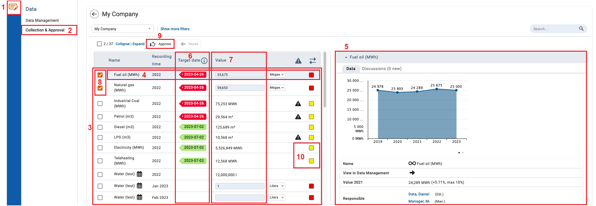
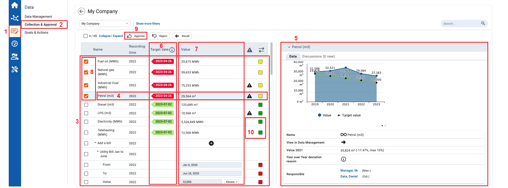

Under Collections and Approval, users and managers can view, edit, and approve KPIs that are assigned to them.
Collection and Approval of KPIs by users

| 1 | On the Left Navigational panel, click Data. |
| 2 | Click Collections and Approval. |
| 3 | The open KPIs assigned to you will display here. |
| 4 | To view details of a KPI, click a KPI. |
| 5 | Here you can see the details of the KPI selected. |
| 6 | The tags in the Target Date column illustrate the date when the KPIs must be reviewed and approved. |
| 7 | In the Value column of the KPI table, ensure values are inputted as appropriate. |
| 8 | To select KPIs for approval, select the checkbox in front of the KPIs. |
| 9 | Click Approve, and then Refresh the page. |
| 10 | The KPI color status changes from red to yellow. The KPI is then assigned to a manager for approval. The approval colors are default colors. They can differ in the client systems. |
Collection and Approval of KPIs by Managers

| 1 | On the Left Navigational panel, click Data. |
| 2 | Click Collections and Approval. |
| 3 | The open KPI’s assigned to you and the ones that you still can adjust will display here. |
| 4 | To view details of a KPI, click a KPI. |
| 5 | Here you can see the details of the KPI selected. |
| 6 | The tags in the Target Date column illustrate the date when the KPIs must be reviewed and approved. |
| 7 | In the Value column of the KPI table, ensure values are inputted as appropriate. Being able to make change in the Value Column is based on the type of permissions you have. |
| 8 | To select KPIs for approval, select the checkbox in front of the KPIs. |
| 9 | To approve the KPIs selected, click Approve. |
| 10 | To update the status of the KPIs, refresh the page. The color status of the KPI at the end of the table changes from yellow to green. The review and approval process for the KPI is now complete. The approval colors are default colors. They can differ in the client systems. |